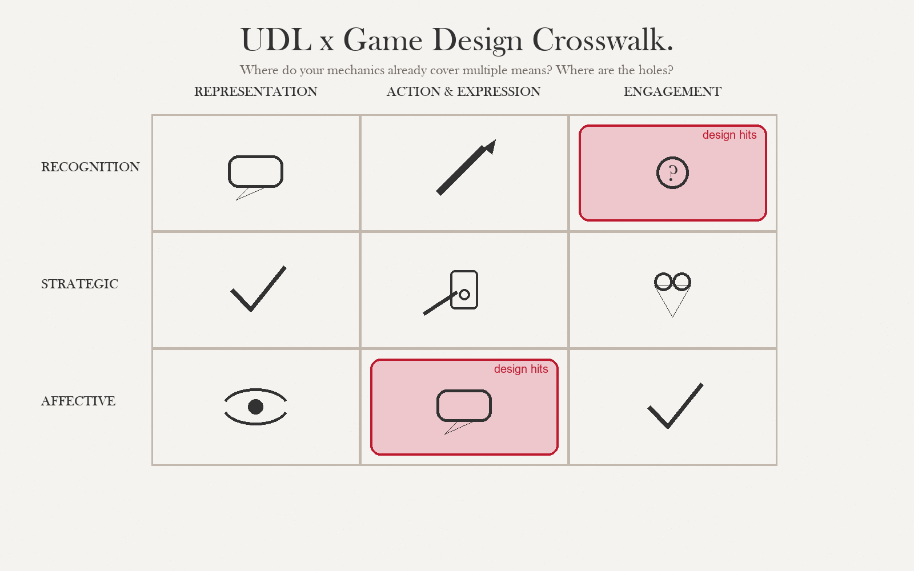

By the end of this session, you can…
- LO 5.1Distinguish narrative-as-wrapper from narrative-as-mechanic, and say which your project needs.
- LO 5.2Choose a role that maps to the learner's professional identity and lowers their threshold to try the objective behaviors.
- LO 5.3Pick a collaboration structure (solo, parallel, cooperative, competitive, asymmetric) that fits the objective type and the context constraints from D1.
- LO 5.4Write a half-page role brief that a teammate could implement without asking you questions.
Wrapper vs. mechanic
Most educational games use narrative as a wrapper: a story frame that makes the content feel less like content. That is fine for retrieval and basic discrimination — and almost useless for judgment under uncertainty, where narrative is not a wrapper but the medium in which the skill lives.

Narrative as wrapper
A thin story justifies the loop. Quiz questions become a space mission. Cheap, safe, adds five points of engagement. Appropriate for retrieval and procedural fluency.
Watch out: the story becomes bigger than the content; learners remember the narrative, not the lesson.
Narrative as mechanic
Story generates the situations the learner must judge. A shift, a case, a negotiation. The narrative is not around the game — the narrative is the game. Required for judgment under uncertainty.
Watch out: expensive to author; linear narratives telegraph answers. Plan for branching or procedural generation.
Who the learner becomes
Role is the single most under-used lever in educational games. A well-chosen role lowers the psychological cost of trying a behavior the learner does not yet own — they are not the one making the clinical call, the pandemic chief is. Once in role, they will attempt things they would not attempt as themselves.
| Role archetype | What it affords | Fit with objective types |
|---|---|---|
| Apprentice | Permission to not know; explicit mentor feedback. | Retrieval, procedural fluency. |
| First responder | Time pressure, partial info, moral weight. | Judgment under uncertainty. |
| Investigator | Gathering evidence, hypothesizing, ruling out. | Conceptual reasoning, discrimination. |
| Steward | Tending a system over time; second-order effects. | Conceptual reasoning, judgment. |
| Negotiator | Trade-offs, alliances, incomplete alignment. | Judgment, social reasoning. |
| Journalist | Collecting & synthesizing accounts. | Conceptual reasoning, critical evaluation. |
| Engineer | Build, test, revise under constraint. | Procedural fluency, reasoning. |
| Peer | No hierarchy; honest collaboration. | Any; flattens stake when identity load is too high. |
Give the learner a role one step closer to their future self than where they are today. Too close and role adds nothing. Too far and they cannot stay in character under pressure.
Five shapes, five consequences
| Structure | What it is | When to pick it | Main risk |
|---|---|---|---|
| Solo | One player, no others. | Self-paced; async contexts; sensitive content. | No social accountability; attrition. |
| Parallel | Each plays alone; compare after. | Retrieval & discrimination; uneven pacing okay. | No real collaboration; "compare" often skipped. |
| Cooperative | Shared goal, shared state. | Judgment & reasoning; deliberation is the skill. | Dominant-player problem; free-riding. |
| Competitive | Zero-sum or relative scoring. | Retrieval & discrimination; motivation through salience. | Erodes psychological safety; narrows strategies. |
| Asymmetric | Different roles, different information. | Cross-disciplinary judgment; systems thinking. | Onboarding cost; hard to playtest. |
Your D1 context constraints probably decide this for you. If learners play alone on a night shift (see Session 02 example), asymmetric cooperation is not an option, no matter how well it fits. Pick the structure the context allows, then optimize.
Casting the role; writing the world
Narrative and role are writing problems. You wrote learning objectives in S3 — now you need a 2-sentence role brief, a world-state description, and 5-8 NPC voice samples. AI Studio will give you a usable draft of all three in a single session, provided you brief it like a director briefs a writer, not like a user briefs a chatbot.
Use case · Draft three role candidates for the same objective
Gemini 2.5 · temperature 0.8Role choice is irreversible once you've built art for it. Generate three candidates before you commit. The model is particularly good at pushing you past the obvious role ("you are the student") to roles that change the cognitive stance.
You are proposing role framings for educational games.
A role is defined by three things, in this order:
1. Epistemic stance (what the player is trying to find out).
2. Agency (what the player can do; what they cannot).
3. Stakes (what is at risk inside the fiction).
You will produce THREE role candidates per brief. Each must:
- Be different in epistemic stance, not just costume.
- Include one sentence on what the role EXCLUDES (the power the
player gives up by accepting this role).
- Name one mechanic that the role makes easy, and one it makes hard.
Do not use: "hero," "champion," "master," "explorer" as default
role names.
Objective (from S3 crosswalk): Residents will state a leading
diagnosis and three differentials, given an ambiguous vignette.
Objective type: judgment under uncertainty.
Learner (D1): IM resident, year 1.
Constraint: single-player, 30-45 min sessions, no audio.
Propose three role candidates.
Watch the "what the role excludes" line. The best role for a game is usually the one that removes a power the learner has in real life — e.g., "you cannot order the test yourself; you can only request it from the attending." Constraints reveal structure.
Use it when
You have your S3 crosswalk and are choosing a role for D2. The model is usefully naive — it will propose roles you dismissed too quickly.
Don't use it when
Your mechanic is not locked yet. Role amplifies or fights mechanic; pick the mechanic first (S4), then cast the role to match.
Use case · NPC voice samples, consistent across scenes
Voice bible · temperature 0.5You will write roughly 40-80 lines of NPC dialogue for a single-session game. Writing them one-by-one produces tonal drift. Instead: establish a voice bible with the model, then generate lines against it.
NPC: the senior attending on call. Sleep-deprived. Speaks in short
sentences. Never uses the word "just." Does not explain her reasoning
unless asked. Responds to requests with one of three registers:
(A) Terse approval: "Do it."
(B) Terse redirect: "Not that. Why?"
(C) Interrogative pressure: "What would change your mind?"
Give me 10 sample lines across all three registers. Keep each under
12 words. Do not break character. Do not invent clinical content I
have not provided.
Using the voice bible above, write three lines the attending would say
in response to:
Resident has ordered troponin + ECG on a 40yo with atypical chest
pain and no risk factors, but has not yet examined the patient.
One line per register (A, B, C).
Draft your role brief
| Time | What happens | Facilitator cue |
|---|---|---|
| 00:00–20:00 | Solo — fill the role brief template: archetype, identity distance, what the role permits, what it forbids. | "One sentence per field. Not an essay." |
| 20:00–40:00 | Solo — choose collaboration structure; note the three context constraints that forced the choice. | "If you did not feel forced, go back to D1." |
| 40:00–60:00 | Triads — read aloud; each listener names one failure mode. | "Failure modes, not alternative designs." |
| 60:00–75:00 | Revise brief; append to D2 in the repo. | Capture the best brief on the board. |
Five fields, ½ page, written in the second person
- Archetype
- Which of the eight, and why this one over the nearest alternative.
- Identity distance
- How far from the learner's current self. Too-close / right / too-far and your rationale.
- Role permits
- Two or three behaviors the role makes available that the learner would not attempt as themselves.
- Role forbids
- One behavior the role explicitly excludes. Protects the content from category slip.
- Exit
- How play ends and how the learner steps out of role (debrief, reflection, epilogue).
Before next week
Before you move on…
Four questions on this session's concepts. Choices lock on first click — formative only.